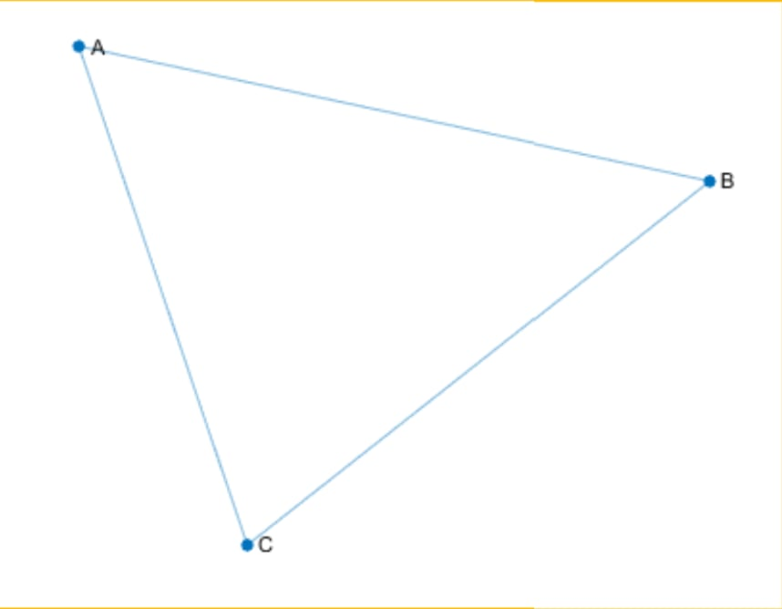

GRAPHS
Definition of UNDIRECTED GRAPHS
UNDIRECTED GRAPHS HAVE EDGES THAT DO NOT HAVE A DIRECTION. THE EDGES INDICATE A TWO-WAY RELATIONSHIP, IN THAT EACH EDGE CAN BE TRAVERSED IN BOTH DIRECTIONS. THIS FIGURE SHOWS A SIMPLE UNDIRECTED GRAPH WITH THREE NODES AND THREE EDGES
